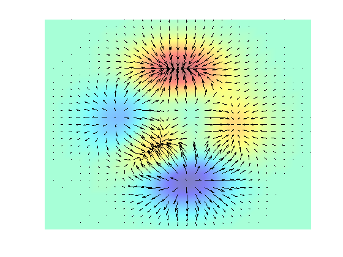

By Ned Gulley, 6-21-93.
Superimpose QUIVER on top of a PCOLOR plot with interpolated shading. The function shown is the PEAKS function.
x = -3:.2:3; y = -3:.2:3; [xx,yy] = meshgrid(x,y); zz = peaks(xx,yy); hold on pcolor(x,y,zz); axis([-3 3 -3 3]); colormap((jet+white)/2); shading interp [px,py] = gradient(zz,.2,.2); quiver(x,y,px,py,2,'k'); axis off hold off